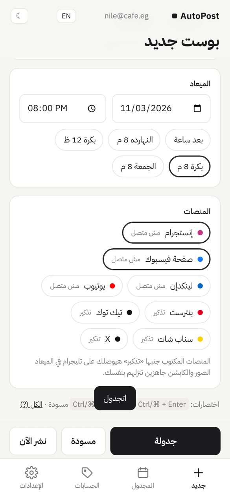

A social media scheduling tool for creators and small businesses. Prepare a post once, pick a date and time, and AutoPost publishes it to your own social accounts.
Schedule images, carousels and videos with a caption and an optional link.
Publish the same post to the accounts you connect: Instagram, Facebook, LinkedIn, YouTube, Pinterest and TikTok.
See what is scheduled, what was published, and a link to each published post.
Manage several brands or clients, each with its own connected accounts.
How it works
Create an AutoPost account (name, e-mail and a password).
Open Accounts and connect a platform. You are sent to that platform's official sign-in page (OAuth) and approve access there. AutoPost never sees your password.
Create a post: add media, write the caption, choose the platforms and the time.
At the scheduled time AutoPost publishes the post and shows you the result.

How AutoPost works with Pinterest
The user taps Connect Pinterest and authorizes AutoPost on Pinterest's own OAuth page.
AutoPost lists the user's boards (boards:read) and the user picks the board their Pins should go to.
When the user schedules an image post with Pinterest selected, AutoPost creates one Pin (or a carousel Pin) on that board at the chosen time (pins:write), with the user's title, description and destination link.
AutoPost shows the link of the created Pin (pins:read) and the connected username (user_accounts:read).
AutoPost only creates Pins the user scheduled, only on the user's own boards. It does not follow, save, comment or message, does not read other people's data, and does not collect Pinterest passwords or cookies. Access can be removed at any time from Pinterest settings. Details are in the Privacy Policy.
Who makes it
AutoPost is built and operated by Abdo Nassar, a video editor and content creator based in Egypt. Contact: abdonassar317@gmail.com